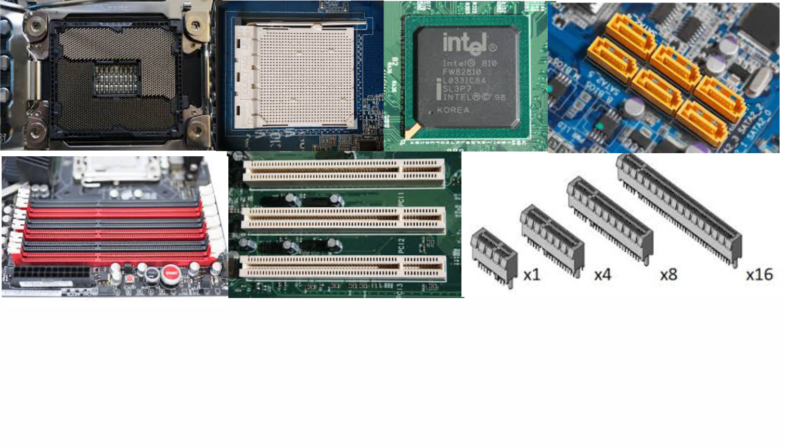
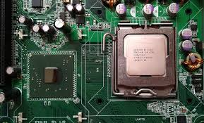
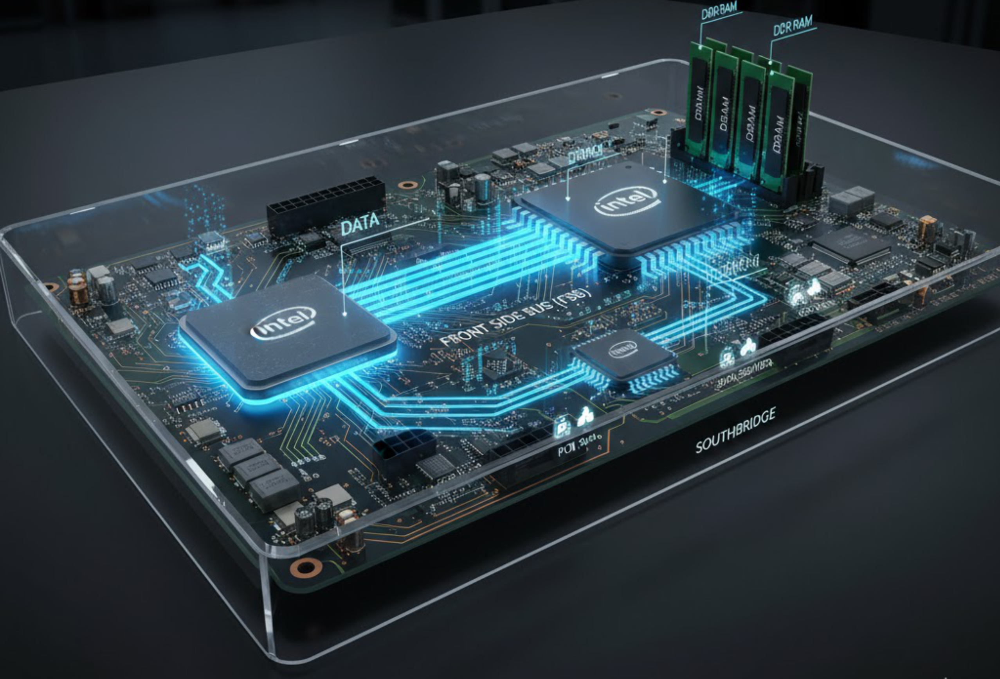
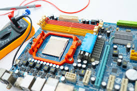
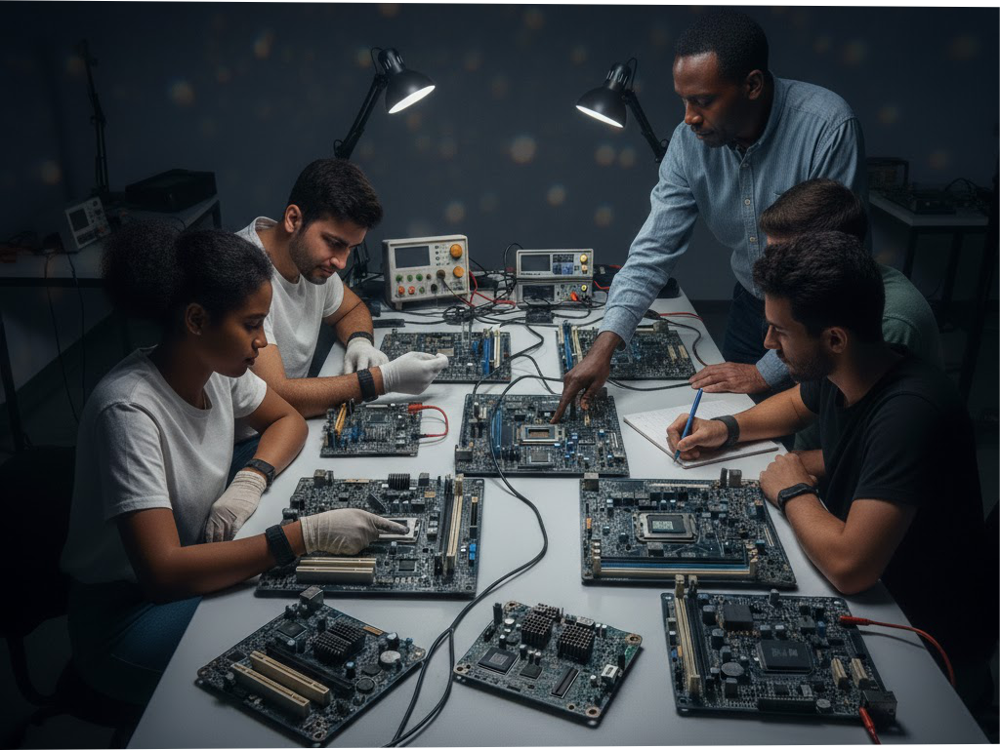
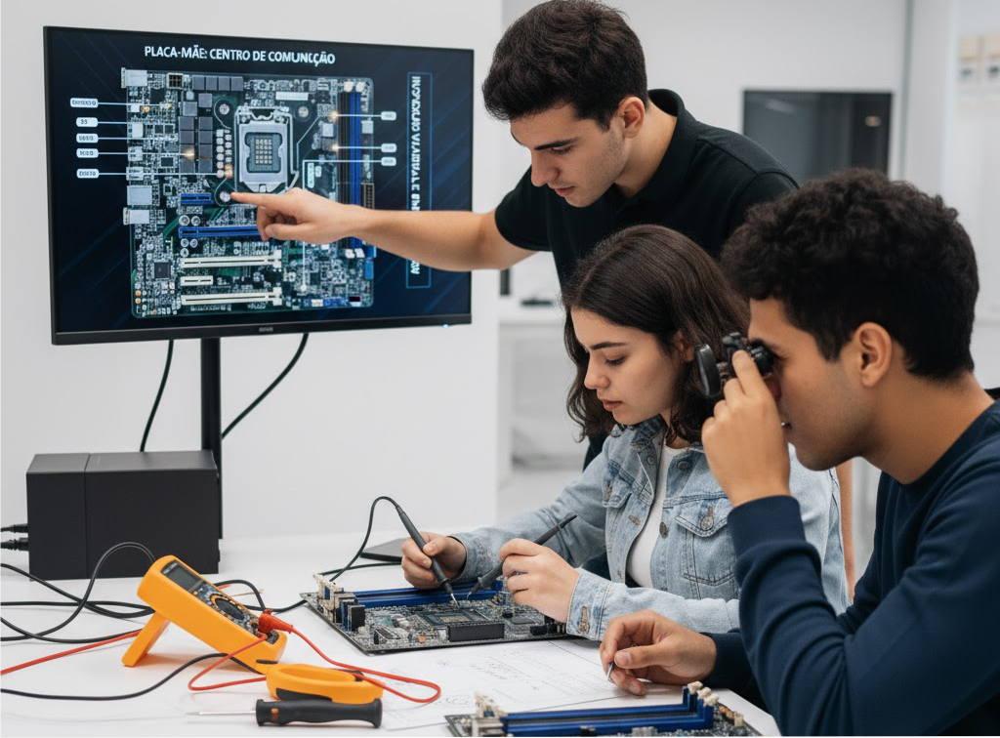

O que é a Placa-Mãe?
A placa-mãe é o principal circuito do computador. Ela interliga todos os componentes — processador, memória, HD, periféricos — permitindo que troquem informações entre si.
É nela que estão os barramentos, slots e circuitos de controle do sistema.

Principais Partes da Placa-Mãe
- Socket do processador: Onde o CPU é instalado.
- Slots de memória: Local onde as memórias RAM são encaixadas.
- Slots PCI/PCIe: Expansão de vídeo, rede, som etc.
- Chipset: Controla a comunicação entre CPU, RAM e dispositivos.
- Conectores SATA: Conectam HDs e SSDs.

Chipset: O Sistema nervoso da Placa-Mãe
O chipset é responsável por coordenar a comunicação entre o processador, as memórias e os periféricos.
Ele é dividido em duas partes:
- Ponte Norte: Conecta CPU, memória e placa de vídeo.
- Ponte Sul: Controla HDs, USB, áudio e rede.

BIOS e CMOS
O chip BIOS contém o programa que inicializa o computador (POST e configurações).
A memória CMOS guarda as configurações da BIOS e é alimentada por uma pequena bateria de 3V.
⚙️ Na manutenção, é comum remover a bateria CMOS para resetar a BIOS e resolver falhas de inicialização.

Barramentos e Comunicação
Os barramentos são caminhos elétricos que transportam dados, endereços e comandos entre os componentes.
Principais tipos:
- Front Side Bus (FSB): Liga CPU ao chipset.
- PCI Express: Comunicação de alta velocidade com periféricos.
- SATA: Transferência de dados para HDs e SSDs.
- USB: Conexão com dispositivos externos.

Diagnóstico e Testes
- Verificar visualmente capacitores estufados.
- Conferir se há oxidação ou trilhas rompidas.
- Usar multímetro para testar tensões nos conectores de energia e slots.
- Limpar a placa com álcool isopropílico se houver sujeira ou oxidação leve.

Prática: Identificação na Bancada
Distribua placas sucata para os grupos e peça que identifiquem:
- Bobina da fonte do entre 1V a 1.5V Socket do processador;
- Slots de memória RAM 1.2v a 2.5V e PCI;
- Chip BIOS e bateria CMOS; 3V
- Chipset 1.5v e conectores SATA. 3v
📸 Os grupos podem fotografar suas placas e anotar os códigos impressos para pesquisa posterior.

Conclusão
Nesta aula, os alunos compreenderam a função da placa-mãe como o centro de comunicação do computador.
Identificaram seus componentes e aprenderam a realizar inspeções visuais e medições básicas.